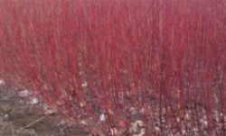

<!DOCTYPE html>
<html lang="en">
<head>
    <meta charset="UTF-8">
    <title>TropGD</title>
    <!--Bootstrap core css-->
    <link rel="stylesheet" href="../static/css/bootstrap.css">
    <link rel="stylesheet" href="../static/css/bootstrap-theme.css">
    <link rel="stylesheet" href="../static/css/index.css">
    <link rel="stylesheet" href="../static/css/gene_search.css">
    <link rel="icon" href="../static/images/icon.png">
    <!-- Bootstrap core JS-->
    <script src="../static/js/jquery-3.2.1.min.js"></script>
    <script src="../static/js/jquery.js"></script>
    <script src="../static/js/bootstrap.js"></script>
    <script src="../static/js/bootstrap.min.js"></script>
    <script src="../static/js/chart.js"></script>
    <script src="../static/js/chart.min.js"></script>
    <script src="../static/js/chart.esm.js"></script>
</head>
<body>
<!--header-->
<div class="h">
    <h1>TropGB<small>Tropical Crops Genome Database</small></h1>
</div>

<!--nav-->
<div class="w">
    <ul class="shell">
        <li class="botton">
            <span ><a href="../index.html">Home</a> </span>
        </li>
        <!--<li class="botton">
            <span>Species<span class="caret"></span></span>
            <ul>
                <li class="has-submenu">
                    <a href="#">Cassava</a>
                    <ul class="submenu">
                        <li><a href="species/cassava6.1.html"><i>Manihot esculenta v6</i></a></li>
                        <li><a href="species/cassava7.1.html"><i>Manihot esculenta v7</i></a></li>
                        <li><a href="species/cassava8.1.html"><i>Manihot esculenta v8</i></a></li>
                        <li><a href="species/cassavaT2T.html"><i>Manihot esculenta T2T</i></a></li>
                    </ul>
                </li>
                <li class="has-submenu">
                    <a href="#">Sugarcane</a>
                    <ul class="submenu">
                        <li><a href="species/sugar_cane.html"><i>Saccharum hybrid cultivar R570 v2.1</i></a></li>
                        <li><a href="species/sugarcane1.html"><i>Saccharum spontaneum Np-X</i></a></li>
                        <li><a href="species/sugarcane2.html"><i>Saccharum officinarum LApurple</i></a></li>
                        <li><a href="species/sugarcane3.html"><i>Saccharum spontaneum AP85-441</i></a></li>
                    </ul>
                </li>
                <li class="has-submenu">
                    <a href="#">Oil palm</a>
                    <ul class="submenu">
                        <li><a href="species/oil_plam.html"><i>Elaeis guineensis EG5</i></a></li>
                        <li><a href="species/oilpalm3.html"><i>Elaeis guineensis EG11</i></a> </li>
                        <li><a href="species/oilpalm1.html"><i>Elaeis guineensis EGPMv6</i></a> </li>
                        <li><a href="species/oilpalm2.html"><i>Elaeis guineensis EGV3</i></a> </li>
                    </ul>
                </li>
                <li class="has-submenu">
                    <a href="#">Olive</a>
                    <ul class="submenu">
                        <li><a href="species/olive.html"><i>Olea europaea v1.0</i></a> </li>
                        <li><a href="species/olive1.html"><i>Olea europaea A9</i></a> </li>
                    </ul>
                </li>
                <li><a href="./species/kenaf.html">Kenaf</a></li>
                <li class="has-submenu">
                    <a href="#">Castor</a>
                    <ul class="submenu">
                        <li><a href="species/castor.html"><i>Ricinus communis v0.1</i></a> </li>
                        <li><a href="species/castor1.html"><i>Ricinus communis v1</i></a> </li>
                    </ul>
                </li>
                <li><a href="./species/Kapok.html">Kapok</a></li>
                <li class="has-submenu">
                    <a href="#">Rubber tree</a>
                    <ul class="submenu">
                        <li><a href="species/natural_rubber.html"><i>Hevea brasiliensis GT1</i></a> </li>
                        <li><a href="species/rubbertree.html"><i>Hevea brasiliensis</i></a> </li>
                    </ul>
                </li>
            </ul>
        </li>-->
        <li class="botton">
            <span>Genome<span class="caret"></span></span>
            <ul>
                <li class="has-submenu">
                    <a href="#">Cassava</a>
                    <ul class="submenu">
                        <li><a href="../species/cassava6.1.html"><i>Manihot esculenta </i>v6</a></li>
                        <li><a href="../species/cassava7.1.html"><i>Manihot esculenta </i>v7</a></li>
                        <li><a href="../species/cassava8.1.html"><i>Manihot esculenta </i>v8</a></li>
                        <li><a href="../species/cassavaT2T.html"><i>Manihot esculenta </i>T2T</a></li>
                    </ul>
                </li>
                <li class="has-submenu">
                    <a href="#">Sugarcane</a>
                    <ul class="submenu">
                        <li><a href="../species/sugar_cane.html"><i>Saccharum hybrid cultivar</i> R570 v2.1</a></li>
                        <li><a href="../species/sugarcane1.html"><i>Saccharum spontaneum </i>Np-X</a></li>
                        <li><a href="../species/sugarcane2.html"><i>Saccharum officinarum</i> LApurple</a></li>
                        <li><a href="../species/sugarcane3.html"><i>Saccharum spontaneum</i> AP85-441</a></li>
                        <li><a href="../species/Saccharumrufipilum.html">Saccharum rufipilum</a></li>
                    </ul>
                </li>
                <li class="has-submenu">
                    <a href="#">Oil palm</a>
                    <ul class="submenu">
                        <li><a href="../species/oil_plam.html"><i>Elaeis guineensis </i>EG5</a></li>
                        <li><a href="../species/oilpalm3.html"><i>Elaeis guineensis </i>EG11</a> </li>
                        <li><a href="../species/oilpalm1.html"><i>Elaeis guineensis </i>EGPMv6</a> </li>
                        <li><a href="../species/oilpalm2.html"><i>Elaeis guineensis </i>EGV3</a> </li>
                    </ul>
                </li>
                <li class="has-submenu">
                    <a href="#">Olive</a>
                    <ul class="submenu">
                        <li><a href="../species/olive.html"><i>Olea europaea </i>v1.0</a> </li>
                        <li><a href="../species/olive1.html"><i>Olea europaea </i>A9</a> </li>
                    </ul>
                </li>
                <li><a href="../species/kenaf.html">Kenaf</a></li>
                <li class="has-submenu">
                    <a href="#">Castor</a>
                    <ul class="submenu">
                        <li><a href="../species/castor.html"><i>Ricinus communis </i>Hale</a> </li>
                        <li><a href="../species/castor1.html"><i>Ricinus communis </i>v1</a> </li>
                    </ul>
                </li>
                <li class="has-submenu">
                    <a href="#">Kapok</a>
                    <ul class="submenu">
                        <li><a href="../species/Kapok.html"><i>Bombax ceiba</i></a></li>
                        <li><a href="../species/Ceiba_pentandra.html"><i>Ceiba pentandra</i></a></li>
                    </ul>
                </li>
                <li class="has-submenu">
                    <a href="#">Rubber tree</a>
                    <ul class="submenu">
                        <li><a href="../species/natural_rubber.html"><i>Hevea brasiliensis</i> GT1</a> </li>
                        <li><a href="../species/rubbertree.html"><i>Hevea brasiliensis</i></a> </li>
                    </ul>
                </li>
                <li><a href="../blast.html" >BLAST</a> </li>
                <li><a href="../jbrowse.html">JBrowse</a></li>
                <li><a href="../gene_search.html">Gene Search</a></li>
                <li><a href="../gene_family_search.php">Gene Family Search</a> </li>
                <li><a href="../miRNA.php">miRNA Search</a></li>
                <li><a href="https://github.com/frankgenome/DataColor">DataColor</a></li>
            </ul>
        </li>
        <li class="botton">
            <span>Transcriptome<span class="caret"></span> </span>
            <ul>
                <li class="has-submenu">
                    <a href="#">Cassava</a>
                    <ul class="submenu">
                        <li><a href="../expression/cassavaexpression.html">Various organs</a> </li>
                        <li><a href="../expression/cassavaexpression1.html">Xanthomonas </a> </li>
                    </ul>
                </li>
                <li class="has-submenu">
                    <a href="#">Sugercane</a>
                    <ul class="submenu">
                        <li><a href="../expression/sugercane.html">Various organs</a></li>
                        <li><a href="../expression/sugercane1.html">Drought stress</a></li>
                        <li><a href="../expression/sugercane2.html">Cold stress</a> </li>
                    </ul>
                </li>
                <li class="has-submenu">
                    <a href="#">Oil palm</a>
                    <ul class="submenu">
                        <li><a href="../expression/elaeisexpression.html">Rought and salinity</a> </li>
                        <li><a href="../expression/elaeisexpression1.html">Salt stress</a> </li>
                        <li><a href="../expression/elaeisexpression2.html">Cold stress</a> </li>
                    </ul>
                </li>
                <li class="has-submenu">
                    <a href="#">Kenaf</a>
                    <ul class="submenu">
                        <li><a href="../expression/kenaf.html">Various organs</a> </li>
                        <li><a href="../expression/kenaf2.html">Salt stress</a> </li>
                    </ul>
                </li>
                <li class="has-submenu">
                    <a href="#" >Rubber tree</a>
                    <ul class="submenu">
                        <li><a href="../expression/rubber.html">Various organs</a> </li>
                        <li><a href="../expression/rubber1.html">Laticifer replicate</a> </li>
                        <li><a href="../expression/rubber2.html">Drying process</a> </li>
                        <li><a href="../expression/rubber3.html">Cold stress</a> </li>
                    </ul>
                </li>
                <li class="has-submenu">
                    <a href="#">eFP-gene</a>
                    <ul class="submenu">
                        <li><a href="../efp/cassava_efp.html">Cassava</a> </li>
                        <li><a href="../efp/sugarcane_efp.html">Sugarcane</a> </li>
                    </ul>
                </li>
            </ul>
        </li>
        <li class="botton">
            <span>Variome<span class="caret"></span> </span>
            <ul>
                <li><a href="../variome/573cassava.indel.html">Cassava</a> </li>
                <li><a href="../variome/98oilplamindel.html">Oil palm</a> </li>
                <li><a href="../variome/336.rubbrtree.indel.html">Rubber tree</a> </li>
            </ul>
        </li>
        <li class="botton">
            <span>Metabolome<span class="caret"></span> </span>
            <ul>

                <li><a href="../metabolite/cassava.html">Cassava</a> </li>
                <li><a href="../metabolite/sugarcane.html">Sugarcane</a> </li>
                <li><a href="../metabolite/oilpalm.html">Oil palm</a> </li>
            </ul>
        </li>
        <li class="botton">
            <span>Phenomics<span class="caret"></span> </span>
            <ul>
                <li><a href="../phenomics/cassava.html">Cassava</a> </li>
                <li><a href="../phenomics/sugarcane.html">Sugarcane</a> </li>
            </ul>
        </li>
        <li class="botton">
            <span><a href="../download.html">Downloads</a></span>
        </li>
        <li class="botton">
            <span>Breeding<span class="caret"></span></span>
            <ul>
                <li class="has-submenu">
                    <a href="#">Key genes</a>
                    <ul class="submenu">
                        <li><a href="../keygene/starch.html">Starch gene</a></li>
                        <li><a href="../keygene/suger.html">Sugar gene</a> </li>
                        <li><a href="../keygene/oil.html">Oil gene</a> </li>
                    </ul>
                </li>
                <li><a href="../guideRNA.html">GuideRNA</a> </li>
            </ul>
        </li>
        <li class="botton">
            <span>Help<span class="caret"></span></span>
            <ul>
                <li><a href="../helpyou.html">FAQ</a> </li>
                <li><a href="../helpus.html">Contact us</a></li>
                <li><a href="../conference.html">Conferences</a></li>
                <li><a href="../links.html">Links</a></li>
            </ul>
        </li>
    </ul>
</div>
<div class="content m">
    <div class="sp" style="width: 100%;height: 170px;">
     <div class="sp_img" style=" margin-left: 10px;float: left;border: 2px ridge #92b99f;margin-top: 10px;">
						<div>
                            
						</div>
     </div>
        <div class="sp_name" style="margin-left: 200px;float: left;margin-top: 40px;">
         <h1><i>Kenaf</i>&nbsp;/红麻</h1>
     </div>
    </div>
        <div class="sp_tax">
            <h3><strong>Taxonomy:&nbsp;&nbsp;&nbsp;</strong>  Angiosperms / Eudicots / Rosids / Malvales / Malvaceae /<i> Hibiscus</i> / <i>H. cannabinus</i></strong></h3>
        </div>
        <div class="sp_int" style="font-size: 18px">
            <p><h3><strong>Introduction</strong></h3></p>
           <p>1. The main uses of kenaf fibre have been rope, twine, coarse cloth (similar to that made from jute), and paper.</p>
<p>2.Uses of kenaf fibre include engineered wood; insulation; clothing-grade cloth; soil-less potting mixes; animal bedding; packing material; and material that absorbs oil and liquids. </p>
<p>3. As part of an overall effort to make vehicles more sustainable, Ford and BMW are making the material for the automobile bodies in part from kenaf.</p>
<p>4.Kenaf seeds yield an edible vegetable oil.</p>
<p>5. The most common process to make kenaf paper is using soda pulping before processing the obtained pulp in a paper machine.</p>
</div>
 <div class="sp_gene" style="font-size: 18px">
            <h4><strong>Genome Overview</strong></h4>
     <p>Kenaf (<i>Hibiscus cannabinus</i>, 2n = 36), a diploid plant in the Malvaceae family, is one of the most important species after cotton and jute for natural fibre production (Zhang et al., 2015a). Polyploidy is recognized as an influence on plant genome evolution, and as a well-established signs of wholegenome duplication (WGD) in many sequenced genomes, such as Gossypium species including G. raimondii (DD, D-genome) (Paterson et al., 2012), G. arboreum (AA, A-genome) (Li et al., 2014), G. hirsutum (AtDt) (Zhang et al., 2015b) and G. australe (GG, G-genome) (Cai et al., 2019). The ploidy in Hibiscus varies from 2 to 16, including H. phoeniceus (2n = 2x = 22), H. pedunculatus (2n = 2x = 30), H. syriacus (2n = 4x = 80), H. aspera (2n = 8x = 72) and H. rosasinensis (2n = 16x = 144). Recently, a draft genome of H. syriacus was assembled with a genome size of 1.75 Gb (Kim et al., 2017). In contrast to seed fibre in cotton, bast (phloem) fibre is derived from the stem bark of plants such as kenaf, jute (Corchorus L.), hemp (Cannabis sativa), ramie (Boehmeria nivea) and flax (Linum usitatissimum). Although the genomes of the seed fibre species G. arboretum(Li et al., 2014), G. raimondii (Paterson et al., 2012) and G. hirsutum (Zhang et al., 2015b) have been sequenced. However, genomic information on bast fibre species is limited and molecular biology research progresses slowly. The sequencing of the kenaf genome will enhance understanding of the genetic mechanism on bast fibre development, as it has for jute (Islam et al., 2017). Kenaf was presumably domesticated in Africa and exhibits a wide range of adaptation to different climates and soils (Zhang et al., 2015a). Kenaf has gained much attention worldwide due to the high biomass yields from kenaf that can be used to produce paper, rope, building materials, livestock feed, absorbents and so on. The annual global production of jute, kenaf and allied fibre generates a farm value of  US$2.3 billion (http://www.fao.org/faostat/en/#data/ QC).</p>
     <p>Leaves are the primary source of photoassimilate in crops. Remarkable phenotypic difference exists for leaf shape in kenaf, including two types of round (entire) and lobed leaves. Leaf shape in kenaf is an important trait that affects canopy architecture, yield and other plant attributes. A typical lobed-leaf kenaf cultivar produces a lower canopy of round leaves before transitioning toan upper canopy of tri-, penta- and septi-lobed leaves, the growth stage that is associated with bast fibre development. Leaf shape in kenaf is unique, and breeders used a single locus to purposefully alter leaf shape among cultivars, especially hybrids. And bast fibre in kenaf makes up 35–40% of stem weight and can be processed into high-quality industrial materials because of its low content of woody impurities and pectin (Xiong, 2008). A precise understanding of the genetic architecture underlying leaf morphology and bast fibre is critical for improving the fibre yield and quality of climate-resilient kenaf varieties.</p>
    <h4><strong>Genome Information</strong></h4>
    <table>
        <tr><td>Total size of assembly (Mb)</td><td> 1078</td></tr>
        <tr><td>Number of chromosomes</td><td>18</td></tr>
        <tr><td>Number of contigs</td><td> 1990</td></tr>
        <tr><td>Longest length (Mb)</td><td>79</td></tr>
        <tr><td>N50 (Mb)</td><td>56</td></tr>
        <tr><td>GC content (%)</td><td>37.6</td></tr>
        <tr><td>Transposable elements (%)</td><td> 67.83</td></tr>
        <tr><td>Gene density</td><td>0.61</td></tr>
        <tr><td>miRNAs</td><td> 131</td></tr>
    </table>
    <h4><strong>Sequencing, assembly and annotation</strong></h4>
     <p><i>Hibiscus cannabinus</i> var. ‘Fuhong 952’ was chosen for genome sequencing. The genome size of H. cannabinus was estimated at 1000 Mbp using flow cytometry with Arabidopsis thaliana genome as a reference (Figure S1). A high-quality H. cannabinus genome was obtained by incorporating single-molecule real-time (SMRT) long reads, Illumina short reads, chromatin conformation capture technology (Hi-C) as well as a high-density genetic map. Appropriate 77 Gb (~80 9 coverage) raw SMRT data were generated using the PacBio Sequel System. The contig-level assembly was performed on PacBio long reads using the CANU package (Koren et al., 2017) (Table S1). The resulting assembly contains 1078 Mbp sequences, similar to the estimated genome size based on flow cytometry, with contig N50 of 2.73 Mbp and the longest contig length of 18.2 Mbp (Table 1). Hi-C libraries yielded 212 million 150-bp paired-end Illumina reads (Table S2). Karyotype analysis reveals 18 pairs of chromosomes in H. cannabinus (Figure S2). Based on the number of chromosomes, these paired-end Hi-C reads were uniquely mapped onto the assembly contigs and grouped into 18 pseudo-chromosomes (Burton et al., 2013) (Figure 1a, Figure S3, Table S3).</p>
    <p>To increase the accuracy of the assembly, Illumina HiSeq short reads (Table S4) were recruited to further improve the assembly using the Pilon program (Walker et al., 2014). A total of 121.75 million (99.3%) reads were mapped to the assembly (Table S5). The quality of the assembly was further assessed by mapping RNA-Seq reads to the genome. A total of 441 970 of 485 096 (91.11%) transcripts could be aligned to at least one contig with 90% sequence identity. We detected 97.38%, 99.21% or 99.80% of transcripts with minimum lengths of 500, 1000 or 2000 bp, respectively, which could be aligned in our kenaf genome assembly (Table S6). Moreover, 234 (94.4%) gene models out of the 248 ultra-conserved core eukaryotic genes (CEGs) from CEGMA analysis (Parra et al., 2007) (Table S7), and 1375 (95.5%) out of 1440 conserved genes from BUSCO analysis (Simao et al., 2015) (Table S8) were completely recalled in our assembly. These results indicate a high-quality assembly and a high level of completeness. A high-resolution genetic map based on 3828 evenly distributed single-nucleotide polymorphism (SNP) markers derived from a ‘Zanyin No. 1’ 9 ‘Fuhong 952’ F2 of 390 individuals showed that 99.44% (1072 out of 1078 Mbp) of theassembled genome was anchored and oriented to 18 pseudochromosomes (Table S9; Figure S4).</p>
    <p>Based on this reference genome of H. cannabinus, 66 004 genes were annotated by combining ab initio gene prediction, homologous protein searches and assembly of RNA-Seq reads. The average gene length in H. cannabinus is 3226 bp, and the number of exons is 5.78 at average (Table S10). Compared with G. raimondii genome (Paterson et al., 2012), H. cannabinus genome contains the average gene length at 3225.7 bp and the average exon number per gene at 5.78. In most H. cannabinus chromosomes, genes were enriched in the sub-telomeric regions, while transposable elements were distributed mainly in gene-poor regions (Figure 1a). To identify the putative functions of genes, these annotated kenaf genes were compared against the protein sequences available at public databases from various species with an E-value threshold of 10 5 . Of these 66 004 kenaf genes, 53 686 (81.20%) were present in at least one published genome, including T. cacao (Argout et al., 2011), G. hirsutum (Li et al., 2015), G. raimondii (Paterson et al., 2012), A. thaliana (Initiative, 2000; Riechmann et al., 2000) or O. sativa (Goff et al., 2002). This indicates the high accuracy of H. cannabinus gene predictions (Table S11). Among these kenaf genes, 46 823 (70.82%) and 45 607 (68.98%) displayed high similarity to known proteins in T. cacao and G. raimondii, respectively, which also belong to the Malvaceae. However, the number of mapped genes in H. cannabinus (46 822) is about twice that in T. cacao (18 627) and G. raimondii (24 935) (Table S11), which suggests a possible mechanism for the dramatic increase in the number of genes in H. cannabinus. A total of 131 microRNAs (miRNAs) were also identified based on the search of public miRNA databases (Table 1; Table S12). Further, 39 telomere fragments (Table S13) and 3572 centromere fragments (Table S14). 67.83% transposable elements (TEs) (Table 2) were predicted in the genome of H. cannabinus, which were divided into two main classes: I and II, containing 58.41% retro-element and 8.7% DNA transposon, respectively.</p>
     <h4><strong>Reference Publication(s)</strong></h4>
     <p>Liwu Zhang, et al. The genome of kenaf (<i>Hibiscus cannabinus L.</i>) provides insights into bast fibre and leaf shape biogenesis. Plant Biotechnology Journal. 2020.<a href="https://pubmed.ncbi.nlm.nih.gov/31975524/">https://pubmed.ncbi.nlm.nih.gov/31975524/</a> </p>

</div>
 </div>
 </div>

